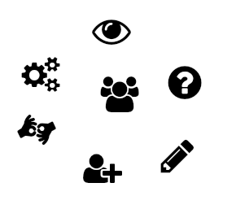

Al hablar de las etapas de desarrollo de software, tenemos que hablar de la ingeniería de Software, la cual es una disciplina que ofrece métodos y técnicas para desarrollar y mantener software de calidad, resolviendo problemas de todo tipo.
Para ello nos enfoca en la importancia que se tiene en la realización de cada una de las etapas que conforman el desarrollo de software, así como también su importancia y los aspectos que se involucran en cada uno de ellos.
La correcta realización de cada una de las etapas nos lleva a irle dando forma al producto final deseado y a un software de calidad.
Son etapas en las que hay que observar, preguntar, escribir, dibujar y agrupar elementos para alcanzar el objetivo deseado.
Objetivos del O.V.I
Objetivo general: Conocer cada una de las diferentes etapas necesarias para el desarrollo de software.
Objetivo específico 1: Identificar el orden secuencial de las diferentes etapas requeridas en el desarrollo de software.
Objetivo específico 2: Diferenciar que elementos están involucrados en cada una de las etapas.
Objetivo específico 3: Comprender la importancia de cada etapa antecesora con el fin de optimizar costos y tiempo de desarrollo.
Objetivos del curso
Adquirir los concetos teoricos sobre las generalidades básicas de Diseño Web.
Utilizar de forma correcta los lenguajes HTML y CSS3, aplicándolos en la construcción de Sitios Web.
Implementar servicios y sitios web a través de sistemas de control de versiones.